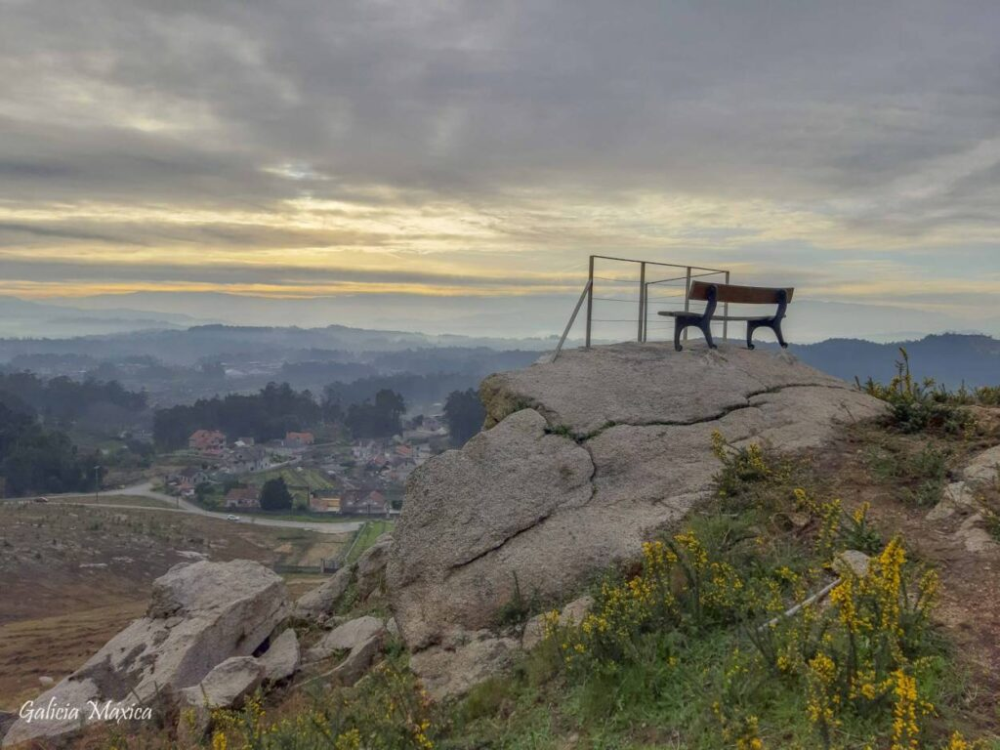

Visitando Salceda
Limita con los municipios de Tui, Porriño, Ponteareas y Salvatierra de Miño. Salceda de Caselas es uno los municipios que componen el Área Metropolitana de Vigo.
Que visitar:
Mirador Coto das Pías

Espicho do Faro
Cibrán
Estás de acordo coa candidatura olímpica?
Si
No